פרויקט גמר · אופנה ומיתוג
CORA
2026 DROP · מותג דגירה
CORA חוקרת את הצורך האנושי ברגעים של ניתוק, שקט ועיבוד בעולם עמוס גירויים. בהשראת מושג הדגירה (אינקובציה), מצב שבו התודעה ממשיכה לעבד וליצור גם בזמן מנוחה, המותג יוצר מרחב אישי בין האדם לסביבה החיצונית. דרך רעיונות של הגנה, עצירה וחיבור מחדש, CORA הופכת את הבגד לפקעת אישית: גבול רך שמאפשר לגוף להתנתק מהרעש החיצוני ולהתחבר מחדש לעצמי הפנימי. המותג רואה בבידוד לא בריחה, אלא תנאי הכרחי לשינוי, ליצירתיות ולצמיחה.
בגד כמרחב אישי
בפרויקט הזה תרגמתי את הרעיון לעולם הגוף והלבוש, וחקרתי כיצד בגד יכול להפוך למרחב אישי: שכבה מגוננת שמרחיקה את הלובש מרעש, מעומס ומגירויים חיצוניים.
קונספט
מהי דגירה?
דגירה (אינקובציה) היא תהליך קוגניטיבי שבו רשתות עצביות ממשיכות לעבד ולארגן מחדש מידע בזמן מנוחה, וכך נוצרים חיבורים חדשים ומתפתחים תובנות, רעיונות וחשיבה יצירתית. המושג חורג מעבר ליצירתיות: בביולוגיה, הרחם והאינקובטור מספקים סביבה מבוקרת שמגינה על ההתפתחות ומקיימת אותה עד שהגוף מוכן לצאת לעולם. CORA מתרגמת את העיקרון הזה לאופנה ויוצרת בגדים שמתפקדים כמרחבים מגוננים זמניים, שבהם הגירוי החיצוני מצטמצם ושינוי פנימי יכול להתרחש.


ארבעת שלבי התהליך היצירתי
גרהם וולאס תיאר ארבעה שלבים בתהליך היצירתי. הדגירה היא השלב המכריע, שבו רעיונות מתפתחים מתחת לסף המודעות.
הכנה
איסוף מידע.
דגירה
ניתוק כלפי חוץ, עיבוד כלפי פנים.
הארה
חיבורים חדשים מופיעים.
אימות
הבאת הרעיון אל המציאות.


המוח במנוחה
הדגירה מתרחשת בזמן מנוחה, כאשר אזורים מסוימים במוח, המכונים "רשת ברירת המחדל" (DMN), נעשים פעילים.
מחקר
תנאים הכרחיים לדגירה
מרחק פסיכולוגי
התרחקות מהבעיה, כדי שהתודעה תוכל להרפות מפתרון בעיות מודע.
צמצום גירויים חיצוניים
הפחתת הסחות דעת חזותיות, קוליות וסביבתיות כדי לפנות מקום לעיבוד פנימי.
מנוחה
לאפשר לגוף ולנפש להירגע דרך שקט, שינה או פעילות בעומס נמוך.
לחץ נמוך
סביבה רגועה ונטולת לחץ שתומכת בהרפיה ומעודדת חשיבה יצירתית.
חושך
הגבלת החשיפה לאור כדי לעודד קשב פנימה ולצמצם גירוי חושי.
עיבוד לא מודע
המוח ממשיך לעבד מידע, ליצור חיבורים חדשים ולהפיק תובנות ללא מאמץ מודע.

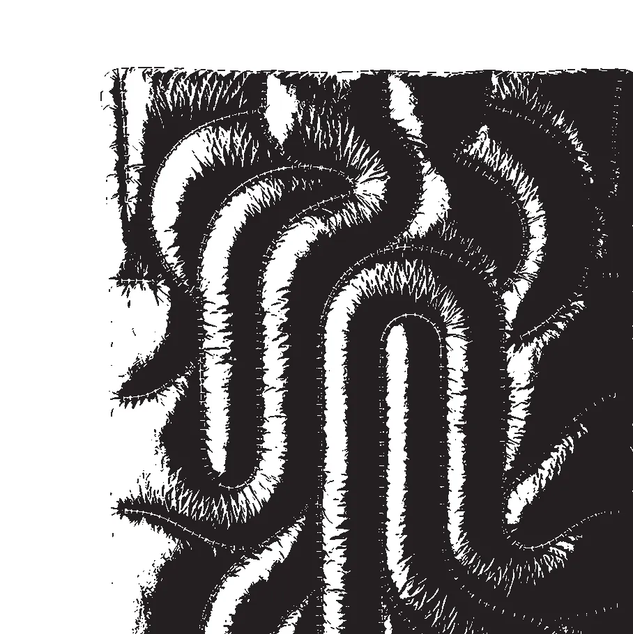
(פתיחת התמונה בגודל מלא)
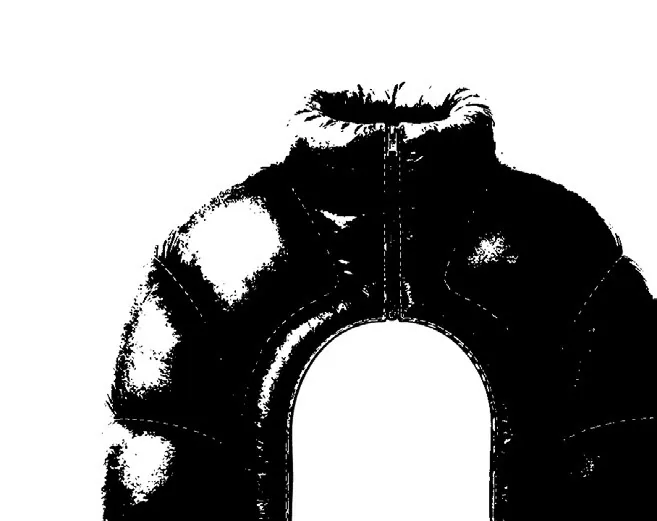
(פתיחת התמונה בגודל מלא)
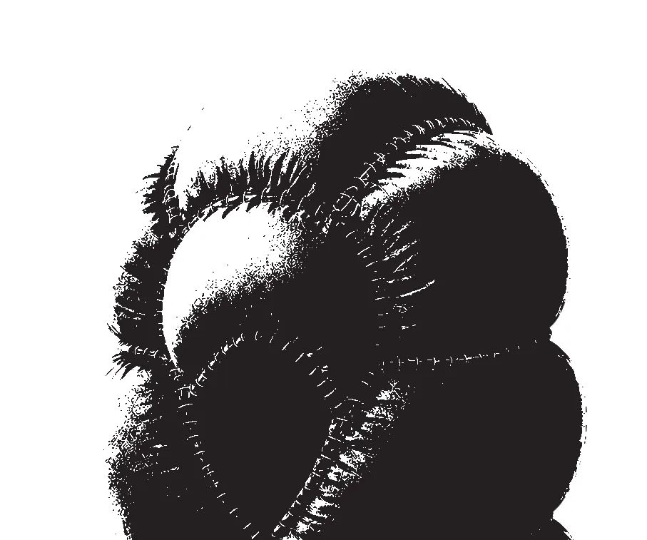
(פתיחת התמונה בגודל מלא)הקולקציה
מרחב נייד
המותג מתרגם את תהליך הדגירה הקוגניטיבי לחוויה פיזית. כל פריט בקולקציה מעוצב כ"מרחב נייד" שמפריד בין הלובש לגירויים חיצוניים מציפים. באמצעות משקל מרגיע, שדה ראייה מצומצם ובד שחור, הבגדים יוצרים עצירה מודעת למערכת העצבים. הבגד לא רק מייצג את הרעיון, הוא מעודד את הגוף לתרגל אותו בפועל.
01 / COCOON
מעוצבת ליצור שכבה חיצונית שמרחיקה את הלובש מגירויים סביבתיים, רעשי רקע, עומס חזותי והסחות דעת. היא מתפקדת כמרחב דגירה אישי, שיוצר תחושה של מיקוד פנימה וניתוק חלקי מהעולם שבחוץ. באמצעות החומר, הצורה והכיסוי, הפקעת מאפשרת מעבר למצב תודעתי שבו מחשבות, רעיונות ורגשות יכולים להתעבד ללא הפרעה מבחוץ.


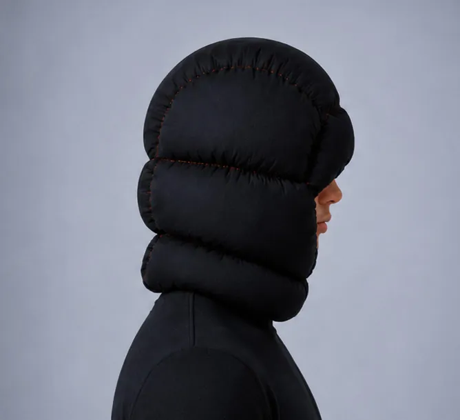
(פתיחת התמונה בגודל מלא)
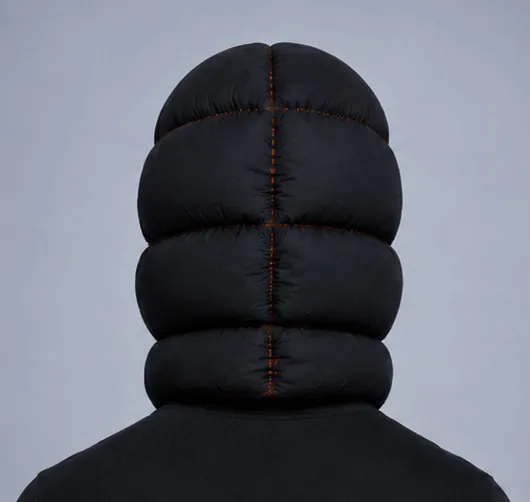
(פתיחת התמונה בגודל מלא)
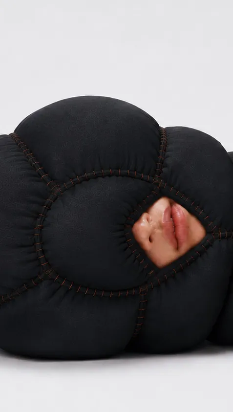
(פתיחת התמונה בגודל מלא)02 / SWADDLE
בכך שהיא עוטפת את הגוף, השמיכה יוצרת גבול זמני בין העצמי הפנימי לסביבה החיצונית. היא מחדדת את המודעות לגוף ולמגע, מסיטה את הקשב מהעולם שבחוץ אל העצמי, ומתרגמת את הדגירה לחוויה פיזית דרך פעולת ההתעטפות.


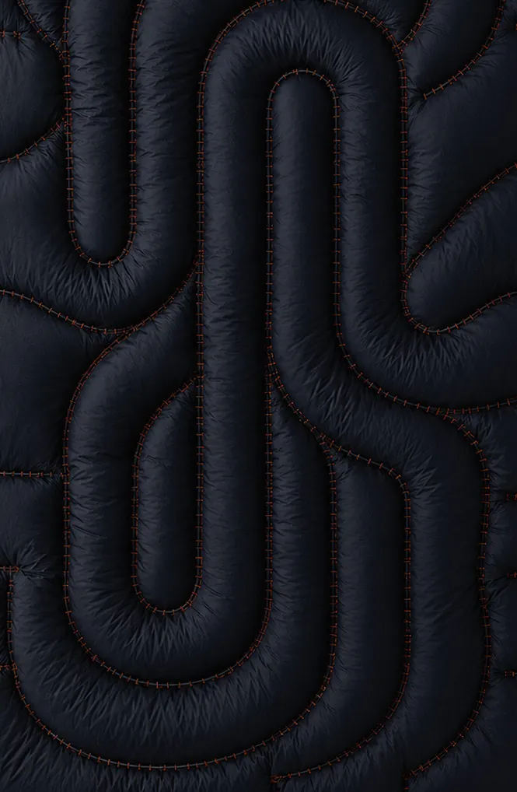
(פתיחת התמונה בגודל מלא)
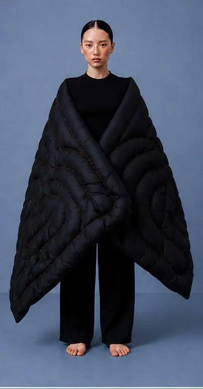
(פתיחת התמונה בגודל מלא)
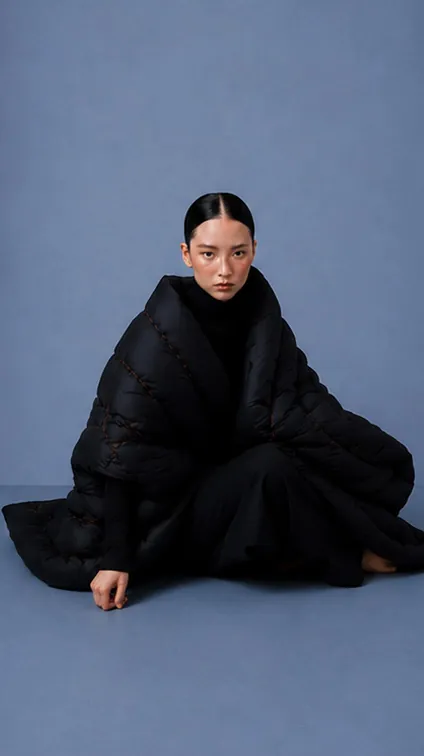
(פתיחת התמונה בגודל מלא)03 / TURGID
הבגד מתרגם את הדגירה דרך תנועת הגוף. המבנה המנופח שלו יוצר נפח סביב הזרועות, מצמצם את טווח התנועה ומאט את היכולת לפעול, להושיט יד ולהגיב. הוא מחייב מעבר ממצב של עשייה למצב של הוויה. המגבלה הפיזית מגבירה את המודעות לגוף ומפנה את הקשב פנימה, ויוצרת מקום למחשבות ולרעיונות להתארגן מחדש.


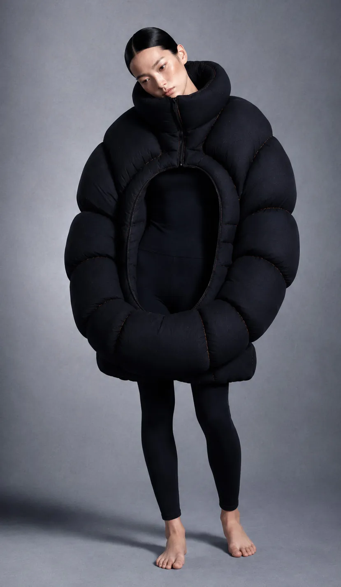
(פתיחת התמונה בגודל מלא)
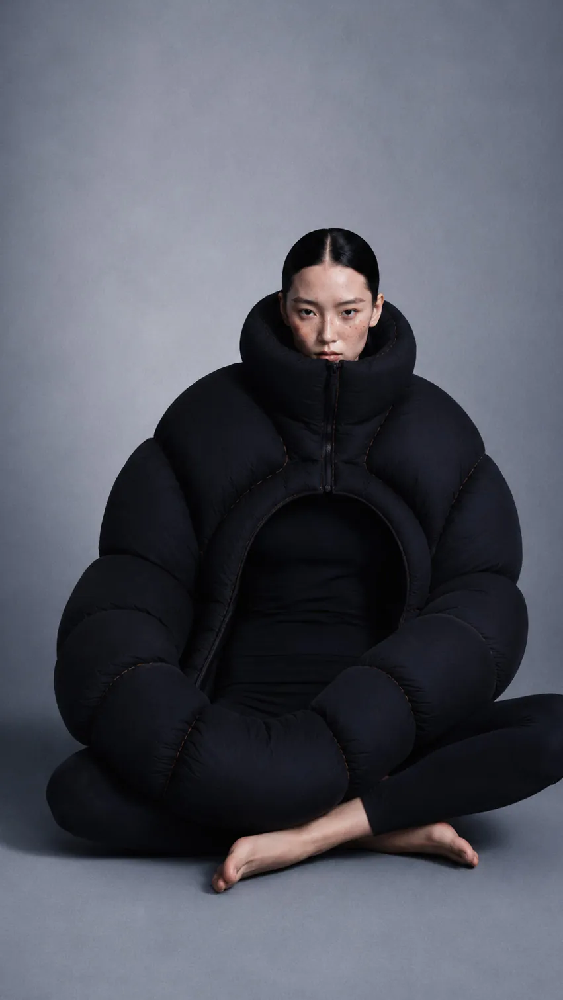
(פתיחת התמונה בגודל מלא)
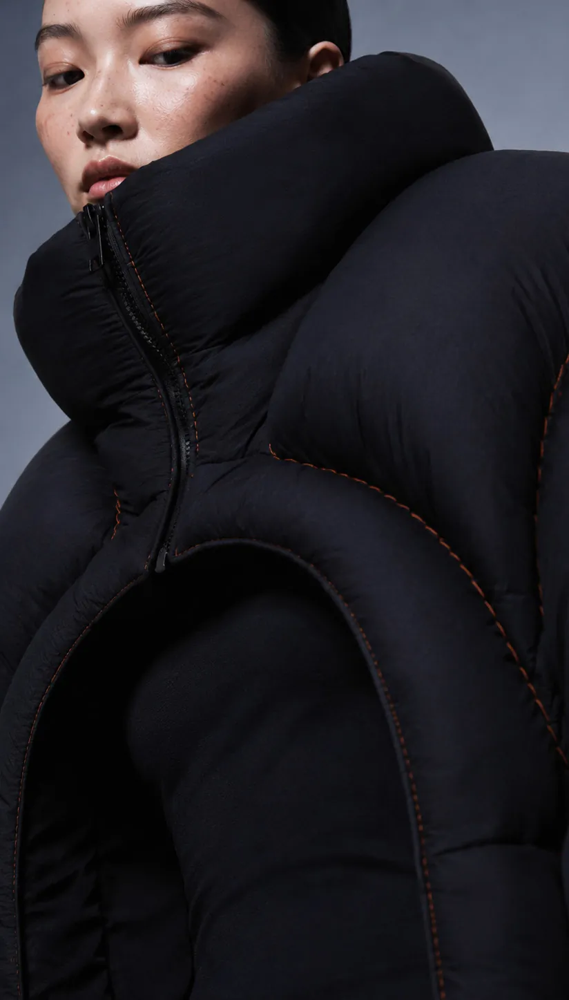
(פתיחת התמונה בגודל מלא)חומרים
בחירת חומרים
פלטת חומרים מאופקת מגדירה את הקולקציה. לייקרה שחורה ומט יוצרת עור שני, ובד מנופח יוצר נפח שמפריד בין הגוף לסביבתו. חוט כתום עובר לאורכה כאלמנט מבני רציף ומסמן כל תפר בעקבה עדינה של חום: תזכורת חזותית לכך שמתחת לשקט מתרחש תהליך סמוי. יחד, החומרים הופכים את הדגירה מתהליך מנטלי לחוויה פיזית.


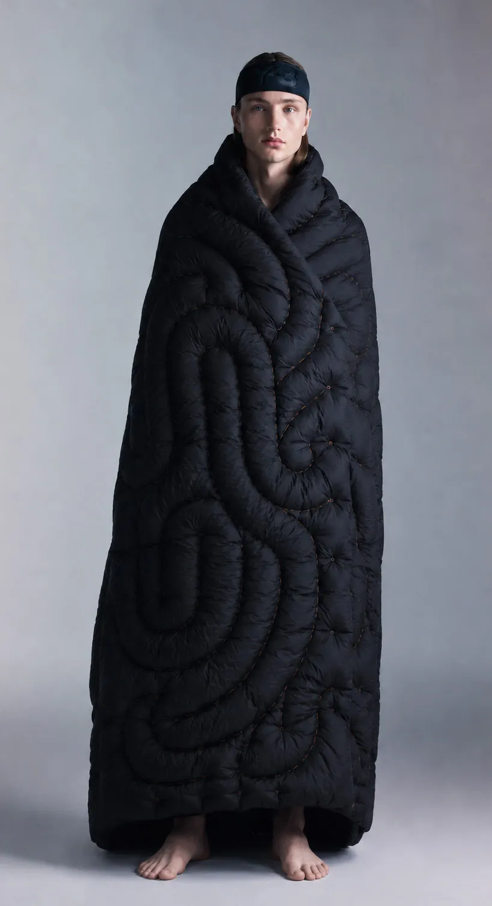
(פתיחת התמונה בגודל מלא)
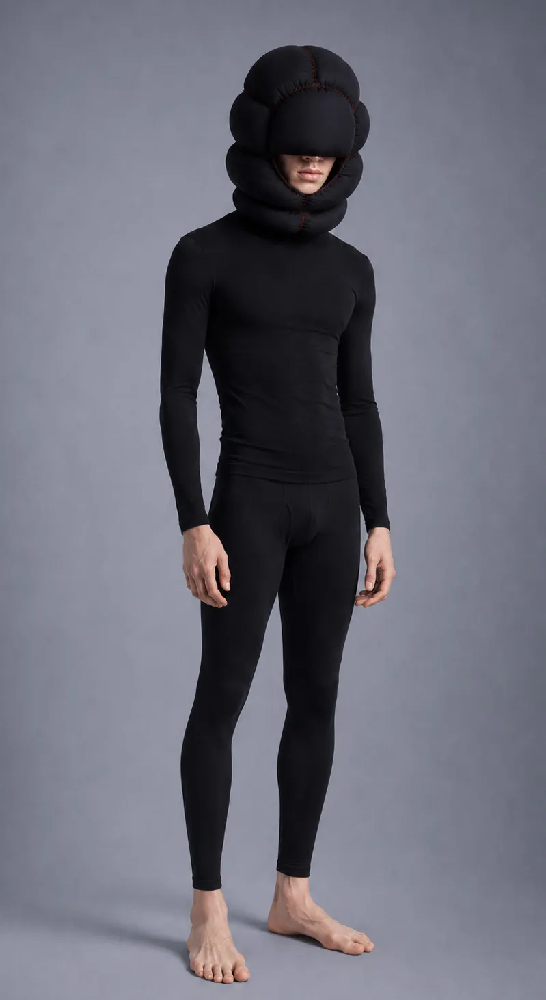
(פתיחת התמונה בגודל מלא)
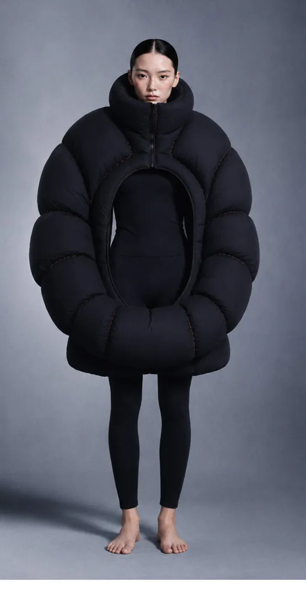
(פתיחת התמונה בגודל מלא)